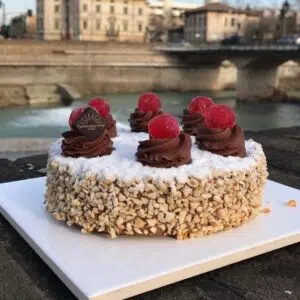

TORTA DUCHESSA

Introduzione
La Torta della Duchessa di Parma è un dolce tradizionale italiano che ha origine nella città di Parma, in Emilia-Romagna. Questa torta viene preparata con pasta di mandorle e crema pasticcera, e viene decorata con frutta fresca o cioccolato fondente.
In questa ricetta ti spiegheremo passo passo come prepararla secondi la ricetta tradizionale dell’Emilia Romagna.
Preparazione
Step 1
In una ciotola, mescolare la pasta di mandorle con 200 g di zucchero e 100 g di farina.
Step 2
Aggiungere 4 uova e la scorza di 1 limone grattugiato alla miscela di pasta di mandorle. Mescolare bene.
Step 3
In un pentolino, portare a ebollizione 500 ml di latte con 1 bustina di vanillina.
Step 4
Aggiungere il latte caldo alla miscela di pasta di mandorle e mescolare bene.
Step 5
Versare l’impasto in una teglia da 24 cm di diametro, precedentemente imburrata e infarinata.
Step 6
Cuocere in forno preriscaldato a 180°C per circa 40 minuti o fino a quando la torta sarà dorata e cotta al centro.
Step 7
Lasciare raffreddare la torta e decorare a piacere con frutta fresca o cioccolato fondente.
Porzioni e calorie
Questa ricetta per la Torta della Duchessa di Parma produce circa 12 porzioni, con una media di circa 300 calorie per porzione. La Torta della Duchessa di Parma è un dolce ricco e cremoso, perfetto per chi cerca un dessert indulgente.
Tuttavia, se si desidera ridurre le calorie, è possibile utilizzare ingredienti a basso contenuto calorico come la farina di mandorle o la stevia al posto dello zucchero.
Torna indietro